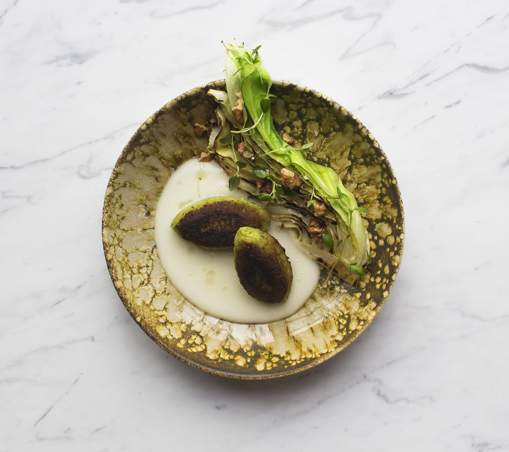

Fremgangsmåde:
1. Agurkerne skæres igennem på langs, smøres med lidt olie og lægges på en brandvarm pande i ca. 3 min. til den har fået farve. Krydres med salt og peber og sættes til side på en tallerken.
2. Falafel steges enten i friture eller på panden ved middelvarme i ca. 10-15 min.
3. Avocado, chili, koriander og lime skæres ud.
4. Fladbrødene varmes på en tørpande til de begynder at bule op.
5. Anret det hele i små skåle, og sæt det på bordet, så familien selv kan samle sit eget fladbrød.
(Er der unger ved bordet, der er særligt glade for gulerødder eller peberfrugt, er der selvfølgelig også plads til det, I bestemmer.)
